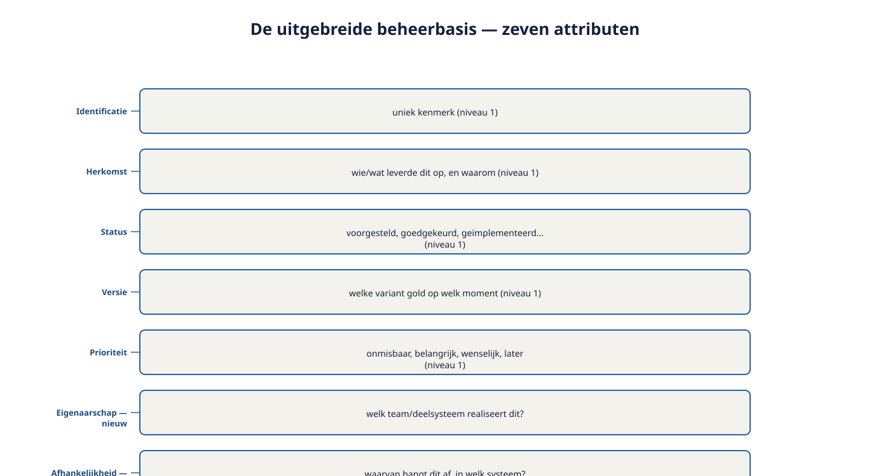
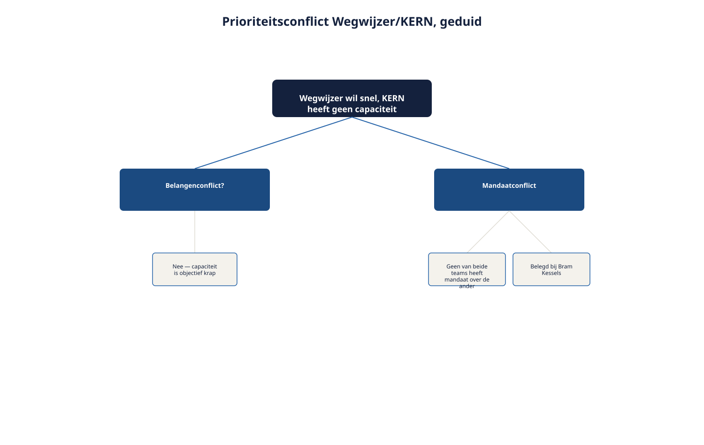
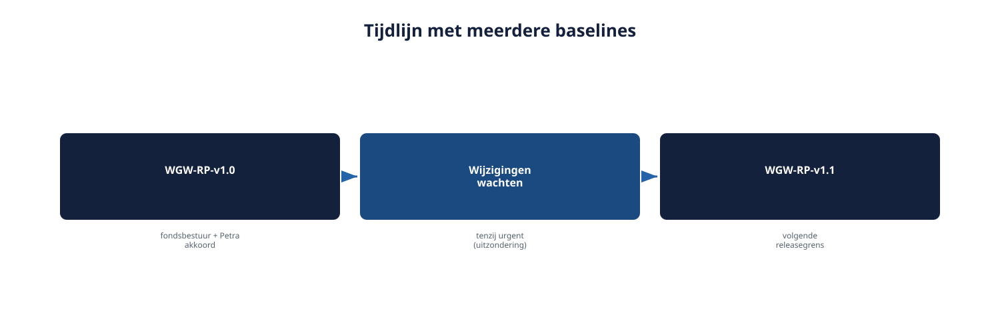

Deel 17 — Management: attributen, prioritering en baselines
Slidedeck · Ductus-cursus Requirements engineering · niveau 2 · deel 17 van 22 · 23 slides
Slide 1 — Titel
Management: attributen, prioritering en baselines
Cursus Requirements Engineering — Niveau 2, deel 17
Ductus
Slide 2 — Vandaag
- Twee nieuwe attributen: eigenaarschap en afhankelijkheid
- Prioriteren over deelsystemen heen
- Baselines: waarom en wanneer
- Baselines beheren
Slide 3 — "Onmisbaar", volgens de bijdragetoets.
"Onmisbaar", volgens de bijdragetoets.
Niet te bouwen, want KERN heeft er pas volgende sprint capaciteit voor.
De prioritering was correct. En toch onbruikbaar.
Slide 4 — 1. Twee nieuwe attributen
Slide 5 — De uitgebreide beheerbasis
| Attribuut | Betekenis |
|---|---|
| (vijf uit niveau 1) | Identificatie, herkomst, status, versie, prioriteit |
| Eigenaarschap | Welk team realiseert dit? |
| Afhankelijkheid | Waarvan hangt dit af, in welk systeem? |
Slide 6 — Figuur 17-1

Slide 7 — Opdracht 17.1 — Eigenaarschap en afhankelijkheid invullen
Vier requirements uit Wegwijzer.
Individueel · 15 minuten
Slide 8 — 2. Prioriteren over deelsystemen heen
Slide 9 — Wat verandert
- Bijdragetoets tegen het programmadoelmodel, via de volledige keten
- Afhankelijkheden wegen mee — niet als reden om prioriteit te verlagen
- Botsende prioriteiten tussen teams: eerst duiden (deel 14), dan beleggen
Slide 10 — Figuur 17-2

Slide 11 — Niet: verlaag de prioriteit.
Niet: verlaag de prioriteit.
Agendeer de afhankelijkheid.
Slide 12 — Opdracht 17.2 — Prioriteitsconflict duiden
Drie situaties. Belangen- of mandaatconflict? Bij wie belegd?
Tweetallen · 20 minuten
Slide 13 — 3. Baselines
Slide 14 — Bij het Nabestaandenloket: één bron van waarheid, in Rubens hoofd.
Bij het Nabestaandenloket: één bron van waarheid, in Rubens hoofd.
Bij Wegwijzer: meerdere partijen die tegelijk wijzigen.
Zonder vast referentiepunt kan niemand meer zeggen "dit is de versie die we bouwen".
Slide 15 — Een baseline is nodig omdat
- Meerdere partijen over dezelfde versie moeten kunnen praten
- Formele goedkeuring een vast, aanwijsbaar object nodig heeft
- Bouwen en testen een stabiele referentie nodig hebben
Slide 16 — Figuur 17-3

Slide 17 — 4. Baselines beheren
Slide 18 — Drie vragen
- Wanneer nieuw? Bij een natuurlijk afstemmingsmoment — niet bij elke kleine wijziging
- Wat met latere wijzigingen? Wachten op de volgende baseline, tenzij urgent genoeg voor een uitzondering
- Hoe blijft het traceerbaar? Elke baseline met een expliciete wijzigingslijst t.o.v. de vorige
Slide 19 — Figuur 17-4

Slide 20 — Zodra Petra een baseline goedkeurt,
Zodra Petra een baseline goedkeurt,
betekent elke latere wijziging — hoe klein ook —
dat opnieuw gevraagd moet worden of haar akkoord nog geldt.
Slide 21 — Opdracht 17.3 — Een baseline samenstellen
Vijf requirements, alle zeven attributen.
Groepjes van drie · 25 minuten
Slide 22 — Wat verandert er als je iteratief werkt?
- Sprints werken bínnen een baseline
- Nieuwe baseline = groter afstemmingsmoment tussen teams
- Geen tegenspraak met agile werken — het gedeelde ankerpunt ervoor
Slide 23 — Vooruitblik
Volgende keer: deel 18
Traceerbaarheid en impactanalyse
Over systeemgrenzen heen — ook naar systemen die je niet zelf beheert.